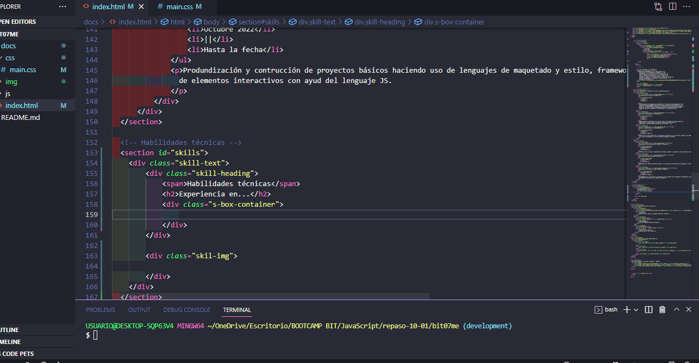

Soy Luisa Díaz
Profesional desempeñada en el área educativa con
experiencia en la enseñanza de lenguajes
de
programación en las ramas de Front end y Back end, así
como el desarrollo de proyectos
freelance en las
mismas. Procesos de ejecución de ciclos y reportes de
incidencia, desde la
planificación y diseño de interfaz de
usuario propiciando la validación de requerimientos y
entrega de resultados.

Luisa Díaz
Educación y cursos complementarios

Licenciatura en diseño tecnológico
- 2014
- ||
- 2020
Profundización en lenguajes de programación y construcción de diagramas de flujo, trabajo de grado desempeñado entorno al enfoque interdisciplinario STEM para el desarrollo de habilidades propicias para el siglo XXI en los estudiantes, desde el diseño de un club de ciencia y tecnología dentro del departamento del programa académico. Monitora y ponente de investigación en el semillero de CYT.

Técnico en programación de Software
- 2012
- ||
- 2013
Especialidad en programación C# y Visual Basic con conexión a bases de datos con MySQL Selver y Access, manejo y diseño de páginas web desde PHP, con animaciones e interacciones efectivas para el usuario.

Cursos complementarios de programación
- 2020
- ||
- Hasta la fecha
Desarrollo de cursos dentro de la Plataforma de educación en línea- Platzi, desde el año 2020, enfocados a la a la rama de programación, en las secciónes de Backend y Frontend.

Diplomado fullstack developer backend y frontend
- Agosto 2022
- ||
- 136 horas
Formación leve en tipo de programación orientada a objetos e inspección a bases de datos relacionales y no relaciones, aplicación simple de frameworks como Node.js y Angular.

Acreditación body form SCRUM and Agile
- Junio 2022
- ||
- 36 horas
Fundamentos de SCRUM y metologías agiles, en la aplicación de proyectos de programación, registro de historias de usuario.
Bootcamp en Frontend con especilización en REACT
- Octubre 2022
- ||
- Hasta la fecha
Produndización y contrucción de proyectos básicos haciendo uso de lenguajes de maquetado y estilo, frameworks de de estilo e implementación de elementos interactivos con ayud del lenguaje JS.
Habilidades técnicas
Experiencia en...
Manejo en lenguajes de programación
Tengo experiencias autodidacta en lenguje de demarcado y de programación en las secciones de backend y fronted.
